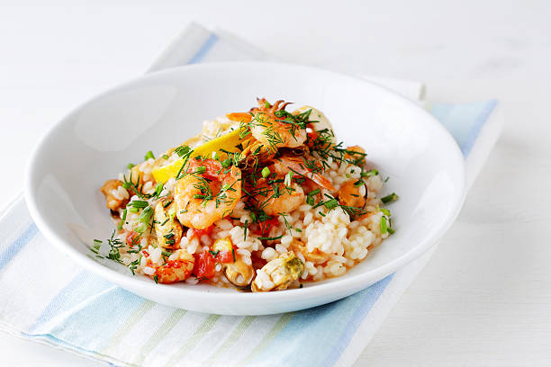

with love

Beef Wellington Spring Rolls
Tender beef and mushrooms wrapped in crispy pastry, served with a rich dipping sauce

Shellfish Risotto
Creamy risotto with fresh shellfish, finished with a touch of white wine and fresh herbs

Beetroot Carpaccio
Thinly sliced marinated beetroot with goat cheese, walnuts, and a balsamic reduction
AXENE